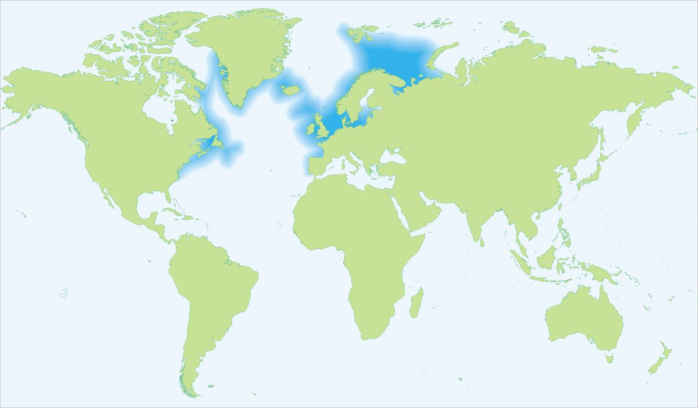

Biologia i rozpoznawanie
Wygląd i rozpoznawanie
Dorsz to krępa, wrzecionowata ryba dennomorska o dużej głowie i szeroko rozciętym pysku, którą trudno pomylić z jakimkolwiek gatunkiem słodkowodnym. Rozpoznasz go po trzech płetwach grzbietowych i dwóch odbytowych, wyraźnie oddzielonych od siebie, oraz po charakterystycznym pojedynczym wąsiku na brodzie, będącym narządem dotyku i smaku pomagającym w wyszukiwaniu pokarmu przy dnie. Linia naboczna jest jasna i łukowato wygięta nad płetwami piersiowymi, dobrze widoczna na tle grzbietu. Ubarwienie jest zmienne i zależy od podłoża: od oliwkowozielonego i brązowawego z gęstym, marmurkowym cętkowaniem po ryby jaśniejsze, piaskowe, przy czym brzuch pozostaje białawy. Bałtyckie dorsze są zwykle mniejsze i smuklejsze niż ich krewniacy z Morza Północnego czy Norweskiego — typowe okazy przybrzeżne mierzą 40–60 cm, a ryba metrowa czy o masie kilkunastu kilogramów należy dziś do rzadkości. Krewniakiem, którego warto znać, jest bliźniaczo podobny biały, słodkowodny miętus — jedyny nasz przedstawiciel dorszowatych żyjący w rzekach i jeziorach.
Środowisko i występowanie
Dorsz w polskich wodach to gatunek wyłącznie morski, związany z Bałtykiem Południowym — od Zatoki Pomorskiej i ławic u wybrzeża zachodniego, przez otwarte akweny środkowego wybrzeża, po Głębię Gdańską i wody Zatoki Gdańskiej. Preferuje dno twarde, żwirowe i kamieniste oraz strefy przydenne o dobrym natlenieniu, gdzie znajduje pokarm i schronienie. Bałtyk jest dla niego środowiskiem trudnym i granicznym: niskie zasolenie, silne uwarstwienie wody oraz rozległe, beztlenowe strefy w głębiach istotnie ograniczają dostępne siedliska i powodzenie rozrodu. Wędkarsko dorsza poszukuje się zarówno na głębszej wodzie z pokładu kutra i łodzi, jak i w strefie przybrzeżnej — z mola, falochronów, pirsów portowych oraz z plaży, dokąd ryby podchodzą sezonowo za narybkiem i skorupiakami, zwłaszcza jesienią i zimą. Rozmieszczenie dorsza silnie zmienia się w rytmie sezonów, temperatury i natlenienia, dlatego skuteczny połów wymaga rozpoznania aktualnych warunków, a nie powielania miejsc sprzed lat.
Biologia, tarło i kondycja populacji
Dorsz bałtycki tworzy dwa główne stada: zachodnie i wschodnie, różniące się genetycznie oraz rejonami tarła. Ryby dojrzewają w wieku około dwóch–trzech lat, a tarło przypada głównie na okres od późnej zimy do lata, ze szczytem wiosennym; odbywa się w toni głębszych akwenów, gdzie ikra unosi się w wodzie o odpowiednim zasoleniu i natlenieniu. I właśnie ten wymóg jest sednem kryzysu: kurczące się „okna” wody dostatecznie słonej i natlenionej w głębiach bałtyckich sprawiają, że sukces rozrodczy bywa niski. Stado wschodniobałtyckie, historycznie kluczowe dla polskiego rybołówstwa, od lat znajduje się w stanie dramatycznego załamania — obserwuje się drastyczny spadek liczebności, pogorszenie kondycji ryb, ich wolniejszy wzrost, mniejsze rozmiary osobników oraz problemy zdrowotne wiązane m.in. z niedotlenieniem, zmianami środowiska i presją pasożytów. Naukowcy wskazują na splot przyczyn: przełowienie w przeszłości, zmiany klimatyczne, eutrofizację i rozrost stref beztlenowych. Ten kontekst ekologiczny jest nieodłączny od dzisiejszego wędkarstwa dorszowego i tłumaczy skalę ograniczeń nakładanych na połowy.
Żerowanie w sezonach
Dorsz jest drapieżnikiem i padlinożercą o szerokim menu: poluje na małe ryby ławicowe, przede wszystkim szproty i śledzie, a także na skorupiaki, wieloszczety i mięczaki wybierane z dna. Jego aktywność pokarmowa zmienia się w rytmie roku i temperatury wody. W chłodniejszych porach — późną jesienią, zimą i wczesną wiosną — dorsze częściej podchodzą w strefę przybrzeżną i na płycizny za zdobyczą, co historycznie czyniło ten okres najlepszym dla wędkarzy brzegowych, zwłaszcza po zmroku i w mętnej, wzburzonej po sztormach wodzie. Latem, gdy przypowierzchniowe warstwy się nagrzewają, ryby wycofują się na głębsze, chłodniejsze i lepiej natlenione akweny, gdzie dostępne były głównie dla łodziowych. Dorsz żeruje przy dnie i w jego pobliżu, reagując zarówno na ruch i drgania przynęty, jak i na jej zapach, dlatego łączenie przynęt sztucznych z naturalnym dodatkiem bywało kluczem do brań. Trzeba jednak powiedzieć wprost: przy obecnym stanie stada schematy sezonowe z lat świetności dorsza nie muszą się już sprawdzać.
Przepisy — połów morski
Przepisy krajowe i zasady lokalne
Przepisy krajowe: Wody morskie: okres ochronny w rybołówstwie rekreacyjnym trwa cały rok; złowioną rybę niezwłocznie wypuść. Źródło: aktualne informacje GIRM
Przed połowem: sprawdź aktualny regulamin i zezwolenie dla konkretnej wody. Wymiar, okres, limit lub zakaz lokalny może być ostrzejszy; brak wartości krajowej nie oznacza zgody na zabranie ryby.
Historyczne metody i przynęty
Ten opis dokumentuje dawne praktyki, a nie instrukcję celowego połowu obecnie: w polskich obszarach morskich dorsz jest objęty całorocznym okresem ochronnym w rybołówstwie rekreacyjnym. Z kutrów i łodzi używano pionowo prowadzonych pilkerów oraz dużych gum na ciężkich główkach, a z plaż i falochronów — ciężkich zestawów gruntowych albo przynęt spinningowych. Sprzęt morski dobierano do głębokości, prądu i słonego środowiska. Przypadkowo złowionego dorsza należy niezwłocznie wypuścić.
Historyczna taktyka połowu
Przed wprowadzeniem całorocznej ochrony z łodzi obławiano dryfem krawędzie głębi, ławice i wraki, prowadząc pilker lub gumę tuż nad dnem. Z brzegu wykorzystywano chłodne miesiące, zmrok i wodę zmąconą po sztormie. Informacje te wyjaśniają dawną praktykę i zachowanie gatunku; nie są zaleceniem połowu w okresie obowiązywania zakazu.
Wartość kulinarna
Dorsz to jedna z najbardziej cenionych ryb kuchni bałtyckiej — jego białe, chude, delikatne mięso o dużych, łatwo oddzielających się płatach jest wszechstronne i wdzięczne w obróbce. Nadaje się do smażenia w panierce, pieczenia, duszenia, gotowania na parze oraz do zup i potrawek rybnych; klasyką polskiego wybrzeża jest smażony filet z dorsza podawany z ziemniakami i surówką. Mięso jest niskotłuszczowe, lekkostrawne i bogate w pełnowartościowe białko oraz jod, a wątroba dorsza to surowiec słynnego tranu. Świeżość poznasz po jędrnym, sprężystym mięsie, czystym morskim zapachu i klarownym oku ryby. W kontekście kulinarnym warto jednak pamiętać o szerszej odpowiedzialności: przy tak trudnej sytuacji stada bałtyckiego świadomy konsument i wędkarz zwraca uwagę na pochodzenie ryby oraz na to, czy jej pozyskanie było zgodne z obowiązującymi ograniczeniami. Smak nie powinien przesłaniać stanu, w jakim znajduje się populacja.
Ciekawostki
Dorsz to ryba wyjątkowo płodna — duża samica potrafi wyprodukować miliony ziaren ikry w jednym sezonie, co w przeszłości pozwalało stadom szybko odbudowywać liczebność; dziś jednak biologiczny potencjał rozrodczy rozbija się o środowiskowe bariery Bałtyku. Wąsik na brodzie, jego znak rozpoznawczy, to precyzyjny czujnik smaku i dotyku, dzięki któremu ryba lokalizuje pokarm w mule i po ciemku. Bałtyckie dorsze wschodnie i zachodnie różnią się genetycznie i były zarządzane jako odrębne stada, mimo że dla oka wędkarza wyglądają identycznie. Dorsz od wieków należał do filarów europejskiego rybołówstwa, a handel suszoną i soloną rybą (sztokfisz, klipfisz) kształtował gospodarki całych regionów Atlantyku. Nazwa rodzajowa Gadus i gatunkowa morhua towarzyszą temu gatunkowi w nomenklaturze naukowej od czasów Linneusza. Warto też wiedzieć, że blisko z dorszem spokrewniony jest słodkowodny miętus — jedyny krajowy przedstawiciel dorszowatych w rzekach i jeziorach, którego nocny, zimowy tryb życia przypomina zachowania morskiego kuzyna.
FAQ — najczęstsze pytania
Czy mogę teraz celowo łowić dorsza rekreacyjnie w polskiej części Bałtyku?
Nie. Dorsz jest obecnie objęty całorocznym okresem ochronnym w rybołówstwie rekreacyjnym na polskich obszarach morskich. Przypadkowo złowioną rybę należy niezwłocznie wypuścić. Przed każdym wyjazdem sprawdź aktualne komunikaty Głównego Inspektoratu Rybołówstwa Morskiego, ponieważ przepisy mogą się zmienić.
Kiedy historycznie brał dorsz nad polskim wybrzeżem?
Za najlepszy sezon brzegowy uchodziły chłodne miesiące — późna jesień, zima i wczesna wiosna — gdy dorsze podchodziły w strefę przybrzeżną, zwłaszcza po zmroku oraz w mętnej wodzie po sztormie. Latem ryby przemieszczały się na głębsze, chłodniejsze akweny. To wyłącznie tło biologiczne i historyczne: obecnie dorsz jest objęty całorocznym okresem ochronnym w rybołówstwie rekreacyjnym na polskich obszarach morskich.
Jakich przynęt używano historycznie do połowu dorsza?
Z kutrów stosowano pilkery i duże gumy prowadzone pionowo przy dnie, dobierając masę do głębokości i dryfu. To opis historycznych technik, nie aktualna porada połowowa: przy całorocznym okresie ochronnym nie wolno celowo łowić dorsza rekreacyjnie, a przypadkowo złowioną rybę trzeba niezwłocznie wypuścić.
Dlaczego dorsza bałtyckiego jest coraz mniej?
Naukowcy wskazują na splot przyczyn, a nie pojedynczy czynnik. Stado wschodniobałtyckie osłabiło historyczne przełowienie, po którym nałożyły się postępujące zmiany środowiskowe: ocieplenie i uwarstwienie wody, eutrofizacja oraz rozrost rozległych stref beztlenowych w głębiach, które ograniczają siedliska i psują warunki tarła wymagającego odpowiedniego zasolenia i natlenienia. Do tego dochodzą pogorszenie kondycji i wolniejszy wzrost ryb, ich mniejsze rozmiary oraz problemy zdrowotne wiązane z niedotlenieniem i pasożytami. Efektem jest utrzymujący się dramatyczny spadek liczebności, który wymusił kolejne, coraz surowsze ograniczenia połowowe — także dla wędkarzy rekreacyjnych. To sytuacja poważna i wciąż monitorowana przez instytucje naukowe oraz zarządzające rybołówstwem.
Źródła i weryfikacja
Materiał ma charakter przeglądowy i edukacyjny. Dorsz to gatunek morski, a na polskich obszarach morskich obowiązuje obecnie całoroczny okres ochronny w rybołówstwie rekreacyjnym; przypadkowo złowioną rybę należy niezwłocznie wypuścić. Historyczne opisy sprzętu i technik służą wyłącznie objaśnieniu dawnych praktyk. Przed wyjazdem zweryfikuj aktualne komunikaty Głównego Inspektoratu Rybołówstwa Morskiego, ponieważ stan prawny może się zmienić.
Tożsamość biologiczna i źródła
Nazwa łacińska: Gadus morhua. Grupa atlasu: morskie. Alias: dorsz atlantycki.
Źródła: FishBase: Gadus morhuaGBIF: Gadus morhuaIUCN Red List: Gadus morhua. Dostęp: 2026-07-17. Zakres: tożsamość taksonomiczna i nazewnictwo oraz, gdy wskazano, ocena ochrony; bez potwierdzenia lokalnego występowania, stanu łowiska ani zasad połowu.
Porównanie taksonomiczne
Porównaj z kartą Śledź atlantycki. Obie karty prowadzą do osobnych rekordów źródłowych; porównanie nie jest kluczem oznaczania w terenie ani gwarancją wyniku połowu.